LA PRIMERA SEÑAL
EL DÍA QUE
TODO
EMPEZÓ.
El 17 de octubre de 1951 se inauguró oficialmente la televisión argentina con la transmisión del acto del Día de la Lealtad desde Plaza de Mayo. Jaime Yankelevich impulsó este acontecimiento, que marcó el nacimiento de Canal 7. En sus comienzos, la televisión todavía era una novedad que muchos conocían mirando las vidrieras de los comercios.
Hemeroteca Pública José Hernández · Legislatura de Buenos Aires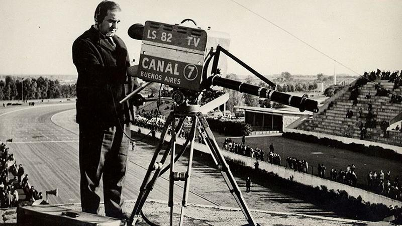
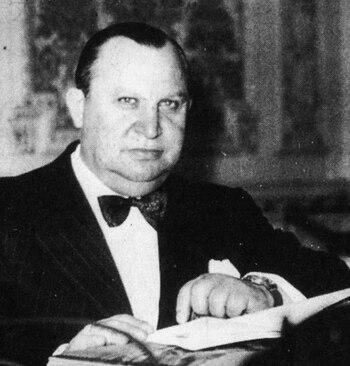
UNA PANTALLA PARA TODOS
LA TELE
SE HACE
POPULAR.
En los años sesenta, la televisión se consolidó como entretenimiento cotidiano. Nuevos canales, concursos, humoristas y figuras reconocibles transformaron la programación. Ciclos como Odol Pregunta mostraron cómo la televisión podía reunir a públicos muy diversos alrededor de una misma experiencia.
Archivo Prisma · RTA · Colección audiovisual general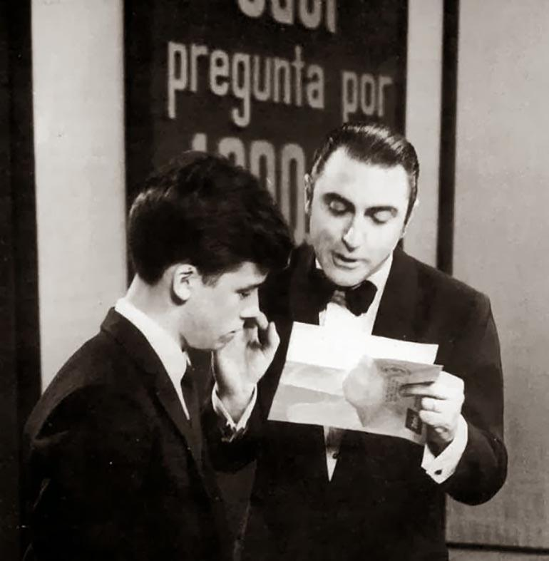
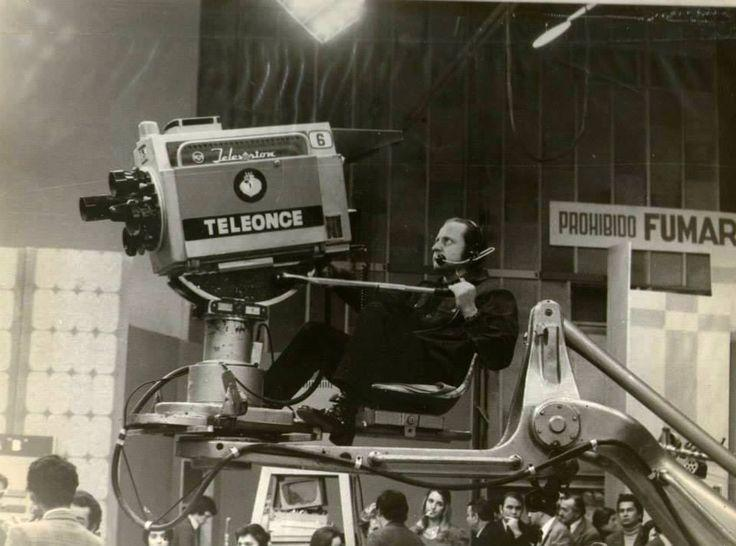
HISTORIAS COMPARTIDAS
UN PAÍS
FRENTE A
LA PANTALLA.
Las telenovelas ocuparon un lugar central en la conversación cotidiana. Rolando Rivas, taxista, estrenada en 1972, se convirtió en un fenómeno popular. Sus personajes y conflictos trascendieron la ficción y mostraron el vínculo emocional que podía generar la televisión con sus espectadores.
Archivo Prisma · Entrevista a Soledad Silveyra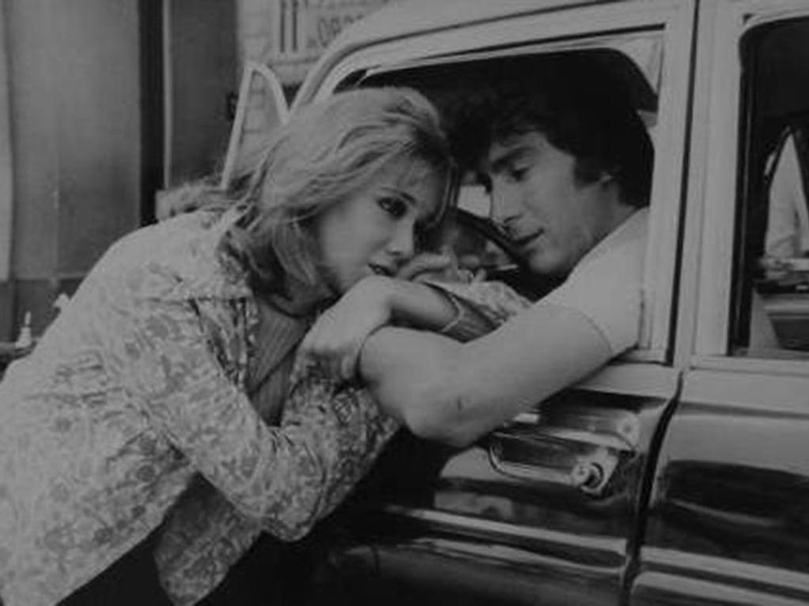
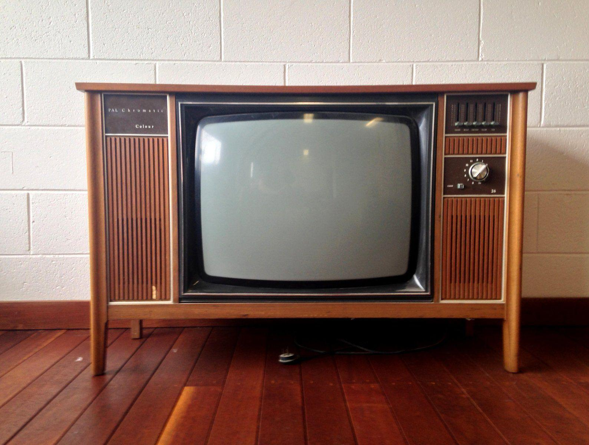
LA IMAGEN SE TRANSFORMA
AHORA,
EN TODO
COLOR.
En 1980 comenzaron las transmisiones regulares a color en Argentina. La nueva tecnología cambió la experiencia de mirar televisión y también el diseño de escenografías, vestuarios e identidades visuales. El institucional Esto es ATC (1981) permite observar el trabajo y la tecnología detrás de las cámaras.
Archivo Prisma · ATC · 4 de abril de 1981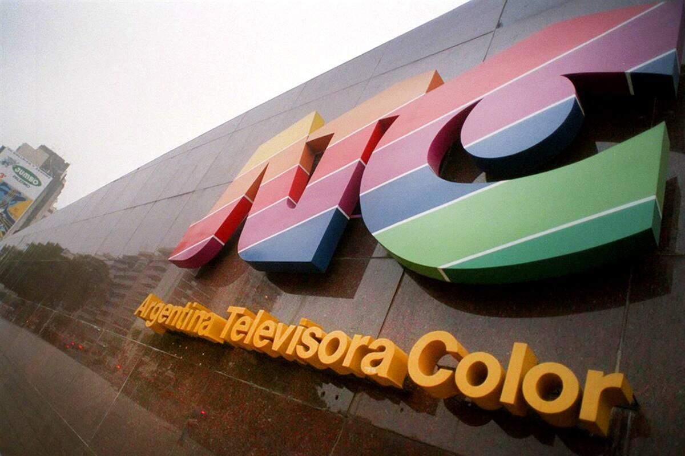
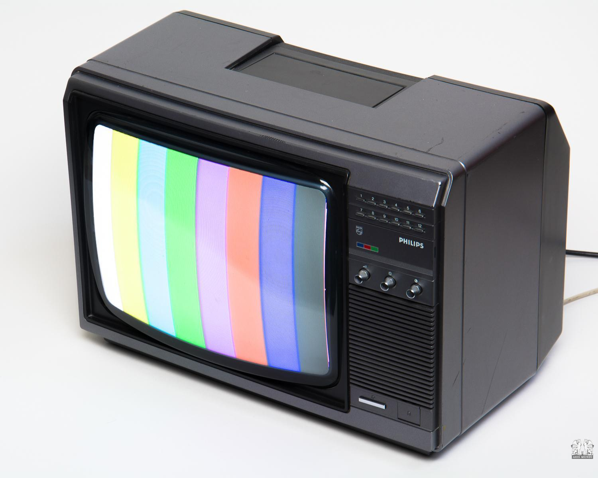
HUMOR Y ENTRETENIMIENTO
LA TELE
COMO GRAN
SHOW.
La televisión de los noventa amplió sus formatos de entretenimiento, humor y espectáculo. El palacio de la risa, de Antonio Gasalla, utilizó la sátira para comentar la actualidad, mientras Videomatch se convirtió en uno de los ciclos populares de la década.
Archivo Prisma · RTA · El palacio de la risa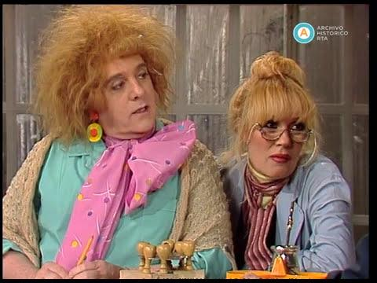
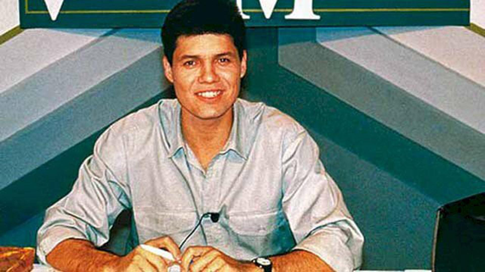
FICCIÓN Y REALITY
OTRAS
FORMAS DE
CONTAR.
La llegada de los realities, como Gran Hermano en 2001, llevó la vida cotidiana al centro del espectáculo. Al mismo tiempo, Los Simuladores (2002) demostró la fuerza de las ficciones argentinas con historias originales, humor y personajes que permanecieron en la memoria del público.
Página/12 (2001) · Telefe (2022)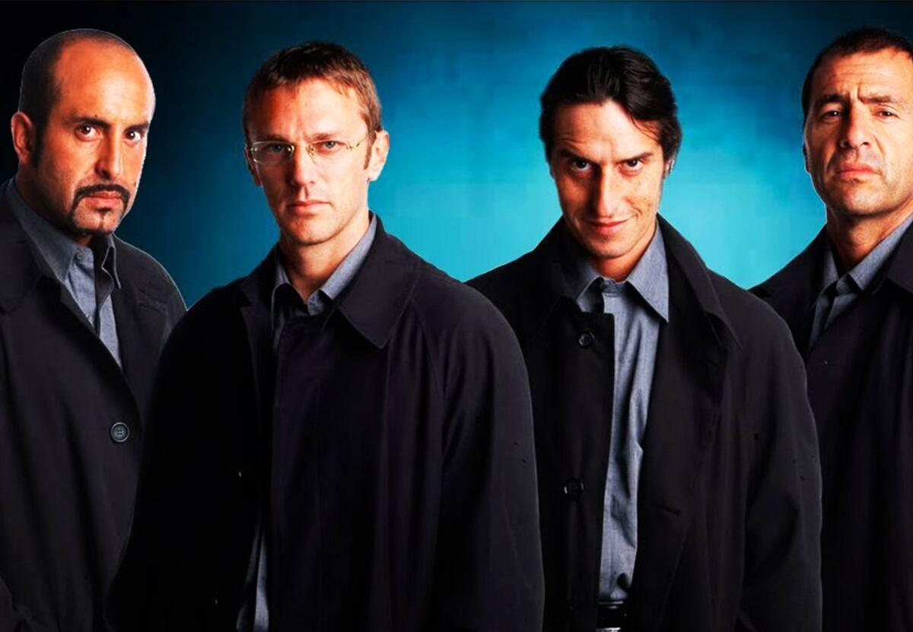
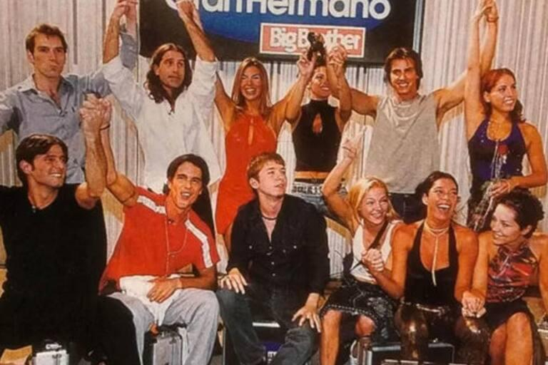
MÁS ALLÁ DEL TELEVISOR
LA TELE
ESTÁ EN
TODAS PARTES.
La creación del Sistema Argentino de Televisión Digital Terrestre en 2009 marcó un avance en la transmisión digital abierta. En paralelo, Internet, los dispositivos móviles y las plataformas bajo demanda cambiaron la forma de acceder a contenidos audiovisuales: hoy es posible mirar programas y series en distintos momentos y pantallas.
Argentina.gob.ar · Documentación oficial sobre televisión digital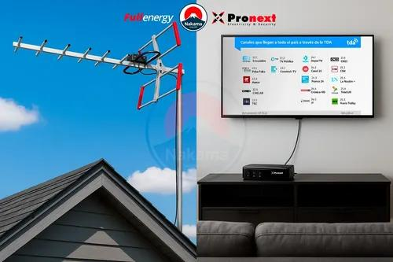
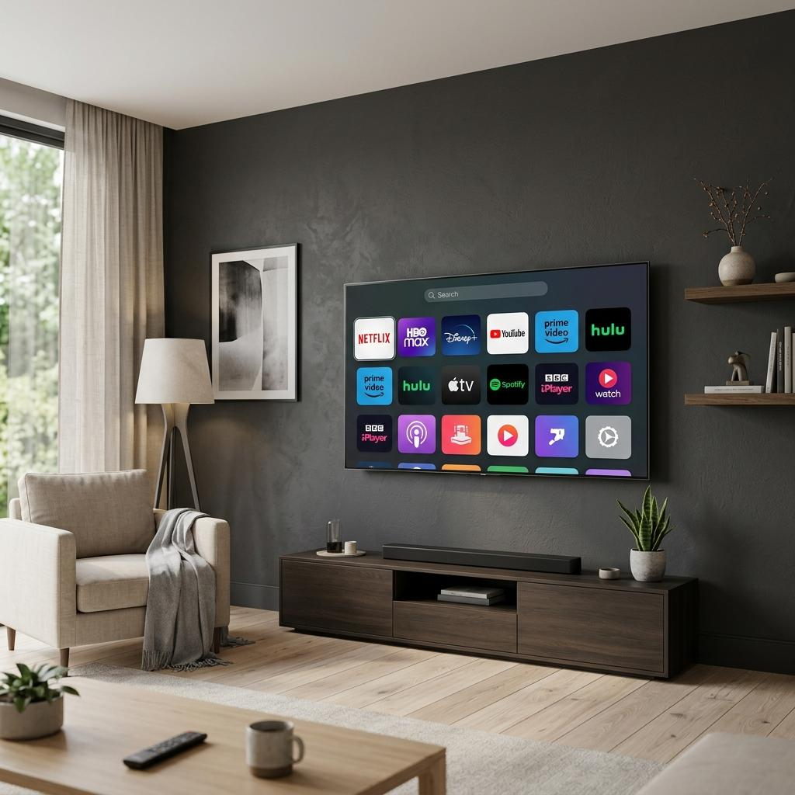
EXPLORÁ LAS FUENTES
ARCHIVO
AUDIOVISUAL.
Los registros históricos cuentan otra parte de la historia. Abrí estos materiales en sus archivos originales y descubrí cómo se veía la televisión de cada época.
LA HISTORIA CONTINÚA
CAMBIÓ LA PANTALLA.
¿CAMBIÓ LA FORMA DE MIRAR?
La televisión argentina pasó de las vidrieras a los hogares y de los hogares a los celulares. Los formatos cambiaron, pero las historias siguen reuniéndonos.
¿Dónde mirás más contenido audiovisual hoy?